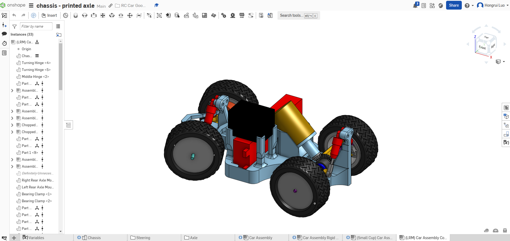
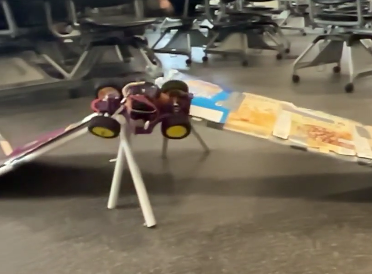

ASME Mini RC Car
Supporting files
Additional photos, video recordings, requirements, and project notes. The main case study presents the selected results; these files provide further context and design history.
Each file can be opened or downloaded individually. Expand a category to browse individual files. HEIC images may require downloading to view.
Documents (1)
Read text
Overview: This remote-controlled car was designed to meet the strict constraints of an ASME engineering competition. Despite its small size and budget limitations, the car performed exceptionally well, demonstrating innovative design and team collaboration. Link to CAD (Onshape): https://cad.onshape.com/documents/88e00e793f209d37a7dc8f30/w/7befc3af7d9b5c66bb07fe76/e/e773fae96e92db028a4020e7?renderMode=0&uiState=6763ad75ac6069322ba5c7c1 Design Parameters: • Mostly 3D-printed - Fits on print bed - Minimal supports • Spend less than $125 • Fits within a 6" by 10" boundary • Fast and controllable for at least 3 laps Purchased Components: • Motor-Servo-ESC Bundle (https://www.amazon.com/GoolRC-4300KV-Brushless-Waterproof-Off-Road/dp/B0B92273WD/) - provides steering and driving power • Battery (https://www.amazon.com/Zeee-5200mAh-Battery-Truggy-Airplane/dp/B06ZYRCPS3) - powers ESC • Tires (https://www.amazon.com/4-Pack-HobbyPark-2-99-inch-Rubber/dp/B071ZX9JB7/) - helps custom rims grip the track (provided rims not used) • Differential (https://www.amazon.com/ShareGoo-144001-Differential-Compatible-Upgrade/dp/B09P1SLYRW/) - decreases turn radius via rear differential steering • Suspension (https://www.amazon.com/ShareGoo-Absorber-Damper-Assembled-Compatible/dp/B09P1R9TNF/) - absorbs shocks from wheel assemblies Other Components: • J-B Weld - provides one-off solutions for connecting mismatched parts • Ball Bearings - reduces friction at mounting locations of rotating components; found in teammate's garage • Transciever/Remote Controller - allows ESC to be remotely controlled • Chassis - 3D-printed main body of the car to hold all of the components • Front Wheels - Axle Mounts - 3D-printed, then brute-forced into accepting a bearing and a custom axle - Custom Axle - 3D-printed to connect wheels while allowing rotation - Turning Hinges - 3D-printed limb to allow for wheel turning about the vertical axis for steering and about the longitudinal axis for suspension - Middle Hinge - 3D-printed limb to keep both turning hinges in line - Collective Steering Linkage - 3D-printed steering linkage to connect both wheels, ensuring that both wheels turn agreeably - Left Steering Linkage - 3D-printed steering linkage to control left wheel turning when actuated by the servo arm - Custom Rims - 3D-printed wheel rim • Rear Wheels - Dogbones - 3D-printed rods that allow for limited sway while transmitting driven torque from differential to wheel; was the subject of most structural concern, seeing that it had to be subjected to the most torque, shear/bending, and compression/tension while being one of the thinnest parts on the vehicle; also kept the wheels from falling off from a flowered tip (similar to a rivet) - Rear Axle Mounts - 3D-printed limb to limit wheel sway to vertical tilt for suspension - Bearing Clamp - 3D-printed clamp to center the dogbones and bearings in the rear axle mounts - Bearing Mount - 3D-printed clamp to fix the differential bearings on either side - Custom Rims - 3D-printed wheel rim
documents/Summary - ASME Car.txt · 0.00 MB · Download
Media/Images (3)
media/images/action-shot.png · 0.18 MB · Download

media/images/cad-model.png · 0.33 MB · Download

media/images/performance--mid-jump.png · 0.54 MB · Download


Notes (1)
Read text
# ASME Mini RC Car ## Purpose Develop a controllable RC car in 12 weeks for a course with jumps, bumps, turns, and straights. ## Requirements and constraints - Fit within a 6 × 10 inch footprint. - Spend less than $125. - Use mostly printed parts with minimal supports. - Maintain speed and control for at least three laps. ## Engineering contribution I helped design the entire car, with my strongest focus on the steering linkages and both dogbone axle assemblies. I also designed holders and clearances for the components, particularly the motor. The team integrated these parts with four-wheel suspension, a differential, and a mostly 3D-printed chassis. ## Outcome and limits The team earned first place in the ASME Mini RC Car competition. The existing race record is three laps in 2:21.
project-notes.md · 0.00 MB · Download